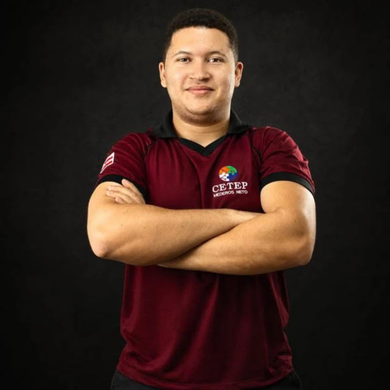
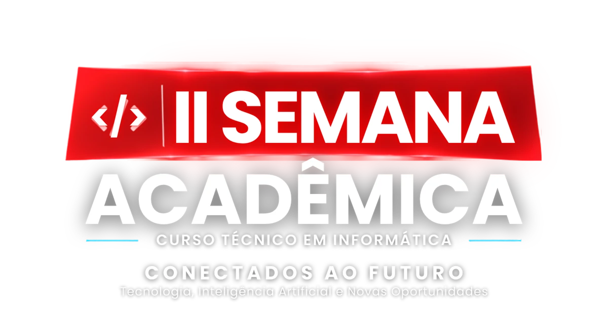
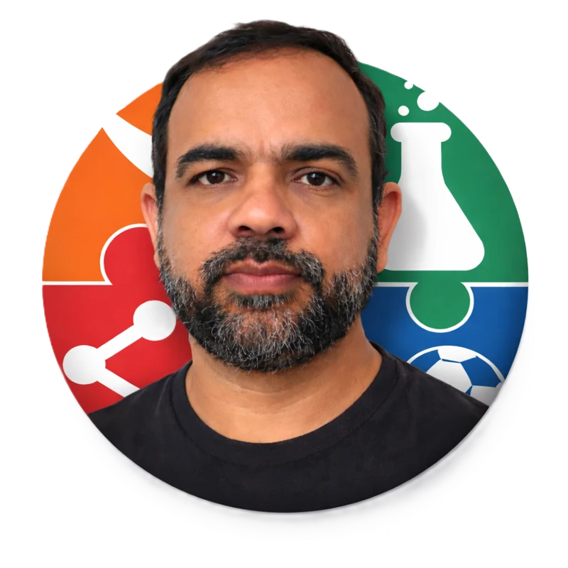
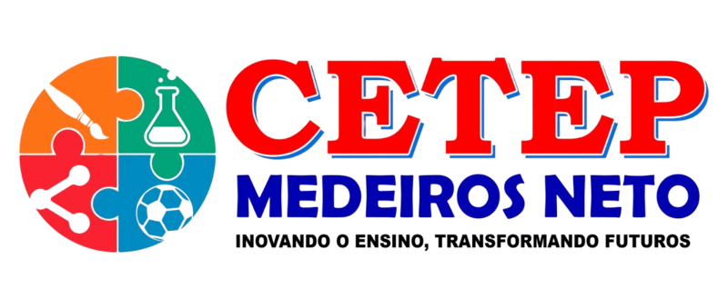
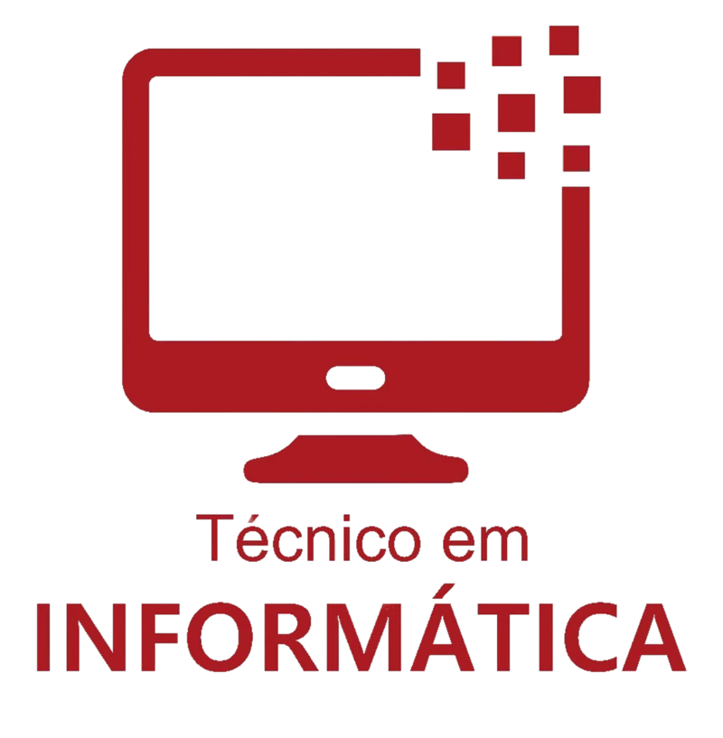
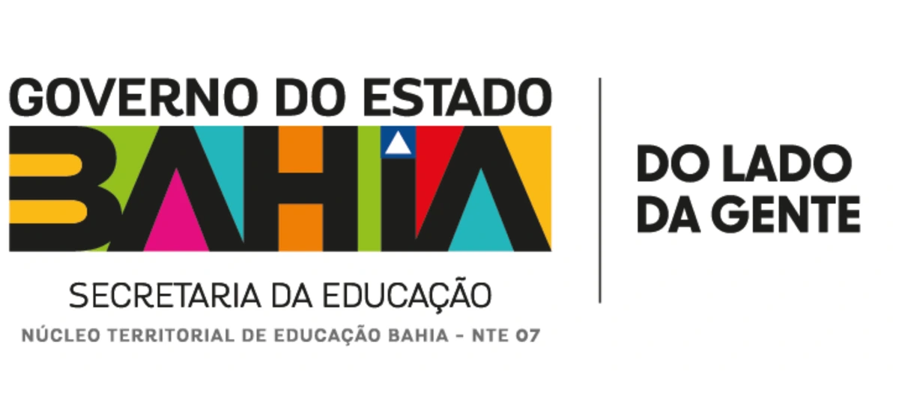

ORGANIZAÇÃO GERALDaniel

CETEP · MEDEIROS NETO / BA
Tecnologia, Inteligência Artificial
e Novas Oportunidades.
01 / O ENCONTRO
Formação técnica, experiências e novas perspectivas para quem está construindo seu caminho na tecnologia.
A II Semana Acadêmica do Curso Técnico em Informática aproxima estudantes, profissionais da educação e comunidade para conversar sobre as transformações no mundo do trabalho e experimentar novas ferramentas.
Inteligência Artificial, segurança digital, design e comunicação se encontram em uma programação que valoriza o uso crítico das tecnologias e o protagonismo das mulheres na área.
02 / PROGRAMAÇÃO
22 de outubro de 2026
Quinta-feira · manhã e tarde.
03 / DA IDEIA À PRÁTICA
Quatro oficinas.
Diferentes formas de olhar
para a tecnologia.
Abra cada oficina para conhecer as atividades, os responsáveis e os espaços.
Manhã: oficinas práticas das 10h00 às 11h30.
Tarde: Oficina 1 das 16h00 às 16h40 e Oficina 2 das 16h40 às 17h25, conforme a programação oficial.
As oficinas temáticas são IA na Prática, Cibersegurança, Design que Conecta e Conexão Tech.
04 / VOZES QUE SE ENCONTRAM
Com destaque para mulheres na tecnologia: protagonismo, desafios e novas oportunidades.
TECNOLOGIA TAMBÉM ENCONTRA A ARTE
MANHÃCoral Ieda
TARDECoral Calíope XIX
Teatro do CETEP
05 / QUEM ORGANIZA
Organização geral da II Semana Acadêmica do Curso Técnico em Informática.





06 / CONEXÕES QUE SOMAM
Instituições parceiras do evento.
07 / NOSSO PONTO DE ENCONTRO
Centro Territorial de Educação Profissional
de Medeiros Neto
Medeiros Neto · Bahia
CETEP
MEDEIROS
NETO / BA
ANTES DO ENCONTRO
O turno matutino é voltado prioritariamente aos estudantes do 1º, 2º e 3º anos do Curso Técnico em Informática e contempla a participação de profissionais da educação convidados.
As inscrições são gratuitas pela Even3, com inscrição individual para estudantes e específica para profissionais da educação.
O turno matutino oferece certificado de 5 horas, condicionado ao comparecimento e ao registro de presença. Essa carga horária se refere exclusivamente ao turno matutino.